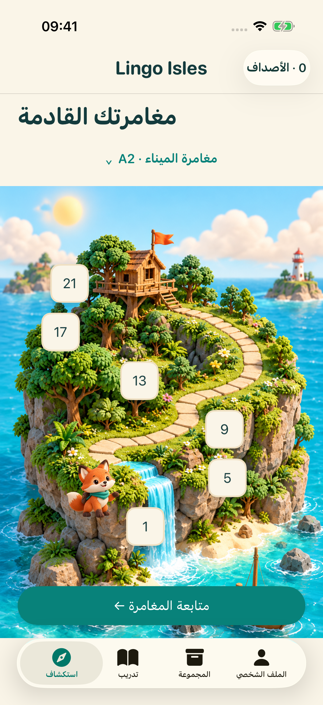
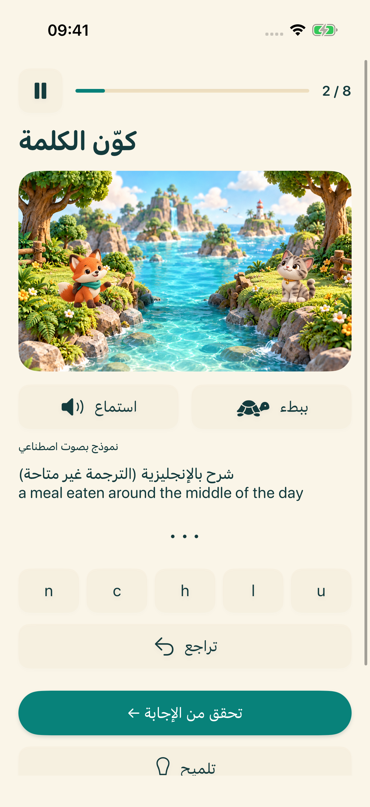
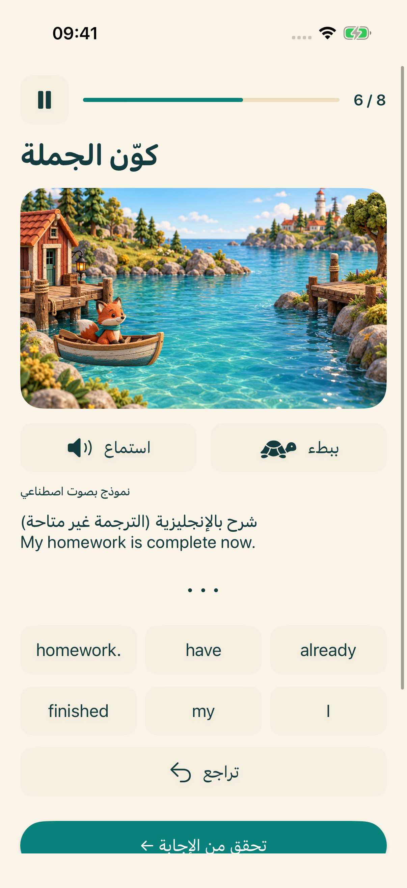
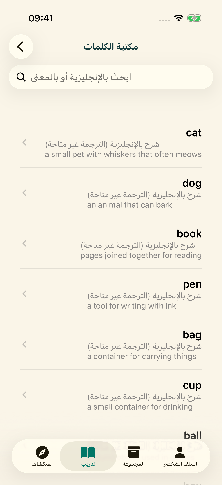

جزيرتك التالية بانتظارك
اختر مرحلة التعلّم واتبع مسارًا من تمارين الإنجليزية القصيرة.
استكشف أربع جزر للتعلّم. استمع، وكوّن الكلمات، ورتّب الجمل، وجرّب صوتك، مع اكتشاف صغير في كل خطوة.
استكشف المغامرةجارٍ التحضير للإطلاق على iPhone وiPad


اختر مرحلة التعلّم واتبع مسارًا من تمارين الإنجليزية القصيرة.

استمع إلى صوت النظام ورتّب الحروف للتدرّب على تهجئة الكلمات الإنجليزية.

رتّب الكلمات واكتشف كيف تتكوّن الجمل الإنجليزية.

استكشف مكتبة الكلمات، واحفظ المفضّلة، وراجع ما تعلّمته.

سجّل صوتك، واستمع إليه، ثم جرّب مجددًا. يتوفر تحويل اختياري للكلام إلى نص على الجهاز في الأجهزة المدعومة. هذا تدريب، وليس تقييمًا للنطق.
تدعم الواجهة 16 لغة. تتوفر شروحات التعلّم بالإنجليزية والصينية المبسّطة؛ وفي اللغات الأخرى، عند غياب الترجمة تُعرض شروحات بالإنجليزية مع توضيح ذلك بجلاء.
تُحفظ مواد التعلّم والتقدّم على جهازك. لا يلزم حساب أو مزامنة سحابية يديرها المطوّر. تعتمد موارد الصوت على جهازك؛ وتحتاج خدمات الإعلانات والخصوصية إلى اتصال بالشبكة.
لا تبدأ الملفات الشخصية لمن هم دون 18 عامًا، أو التي لم تُحدّد فئتها العمرية، مسار الإعلانات. وللبالغين، تعتمد الإعلانات على خيارات الخصوصية والتوفر. مشاهدة إعلانات المكافآت اختيارية.